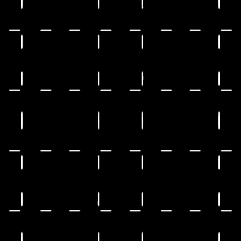
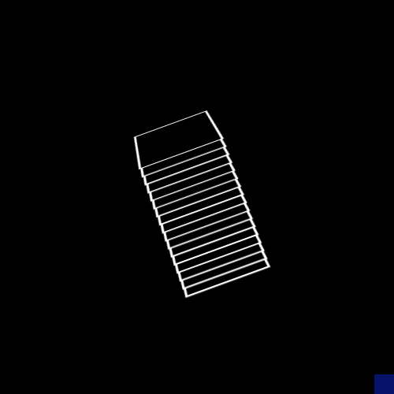

|

kai@asdneat.ldpiaang
|
I am a Machine Learning Engineer at Weights & Biases where I work on the Frameworks and Integration Team. In addition I also am the Founder and President at Landskape AI, a theoretical and analytical deep learning non-profit research organization.
I broadly work on theoretical and analytical deep learning with focus on but not limited to the following domains:
- Non-linear dynamics & Loss Landscapes
- Continual & Lifelong Learning
- Knowledge Distillation
- Adversarial Robustness
- Sparsity
Presently, I am working as a Visiting Research Scholar on topics of Sparsity at VITA, UT-Austin, under Dr. Zhangyang Wang.
In the past I have been fortunate to work with the likes of Dr. Amrita Chaturvedi from Indian Institute of Technology, Varanasi (IIT-BHU) in the field of biomedical data analysis and Vijay Kumar Verma from Indian Space Research Organization (ISRO) in the domain of Genetic Algorithms.
CV /
Google Scholar /
GitHub /
Blog /
Twitter /
W&B Profile
|

|
 |
Mish: A Self Regularized Non-Monotonic Neural Activation Function
Diganta Misra
BMVC, 2020
project /
paper /
abstract /
bibtex
We propose Mish, a novel self-regularized non-monotonic activation function which can be mathematically defined as: $f(x)=xtanh(softplus(x))$. As activation functions play a crucial role in the performance and training dynamics in neural networks, we validated experimentally on several well-known benchmarks against the best combinations of architectures and activation functions. We also observe that data augmentation techniques have a favorable effect on benchmarks like ImageNet-1k and MS-COCO across multiple architectures. For example, Mish outperformed Leaky ReLU on YOLOv4 with a CSP-DarkNet-53 backbone on average precision ($AP^{val}_{50}$) by $2.1\%$ in MS-COCO object detection and ReLU on ResNet-50 on ImageNet-1k in Top-1 accuracy by $\approx 1 \%$ while keeping all other network parameters and hyperparameters constant. Furthermore, we explore the mathematical formulation of Mish in relation with the Swish family of functions and propose an intuitive understanding on how the first derivative behavior may be acting as a regularizer helping the optimization of deep neural networks.
@article{misra2019mish,
title={Mish: A self regularized non-monotonic neural activation function},
author={Misra, Diganta},
journal={arXiv preprint arXiv:1908.08681},
volume={4},
pages={2},
year={2019},
publisher={CoRR}
}
CV Talk Episode /
ML Cafe Episode /
Sicara Talk /
W&B Salon Episode


|
 |
Rotate to Attend: Convolutional Triplet Attention Module
Diganta Misra*,
Trikay Nalamada*,
Ajay Uppili Arasanipalai*,
Qibin Hou
WACV, 2021
project /
paper /
supplementary /
video /
abstract /
bibtex
Benefiting from the capability of building interdependencies among channels or spatial locations, attention mechanisms have been extensively studied and broadly
used in a variety of computer vision tasks recently. In
this paper, we investigate light-weight but effective attention mechanisms and present triplet attention, a novel
method for computing attention weights by capturing crossdimension interaction using a three-branch structure. For
an input tensor, triplet attention builds inter-dimensional
dependencies by the rotation operation followed by residual transformations and encodes inter-channel and spatial
information with negligible computational overhead. Our
method is simple as well as efficient and can be easily
plugged into classic backbone networks as an add-on module. We demonstrate the effectiveness of our method on
various challenging tasks including image classification on
ImageNet-1k and object detection on MSCOCO and PASCAL VOC datasets. Furthermore, we provide extensive insight into the performance of triplet attention by visually
inspecting the GradCAM and GradCAM++ results. The
empirical evaluation of our method supports our intuition
on the importance of capturing dependencies across dimensions when computing attention weights.
@inproceedings{misra2021rotate,
title={Rotate to attend: Convolutional triplet attention module},
author={Misra, Diganta and Nalamada, Trikay and Arasanipalai, Ajay Uppili and Hou, Qibin},
booktitle={Proceedings of the IEEE/CVF Winter Conference on Applications of Computer Vision},
pages={3139--3148},
year={2021}
}


|
 |
Genetic Algorithm Optimized Inkjet Printed Electromagnetic Absorber on Paper Substrate
Diganta Misra,
Rahul Pelluri,
Vijay Kumar Verma,
Bhargav Appasani,
Nisha Gupta
IEEE AESPC, 2018
paper /
abstract /
bibtex
Printable electronics based electromagnetic absorbers are receiving increasing attention of the electromagnetic community because of their unprecedented advantages. This paper presents the design of printable electromagnetic absorbers for the X band. The design of the absorber is optimized using the Genetic Algorithm (GA) to enhance the absorptivity and the absorption bandwidth. The design involves the placement of several square-shaped conductive ink at optimal locations on the paper substrate such that desired absorption characteristics are obtained. Simulations are carried out using the HFSS simulation software. The optimized structure offers an absorptivity of more than 90% in the X band thereby proving to be a viable solution for stealth applications.
@inproceedings{misra2018genetic,
title={Genetic Algorithm Optimized Inkjet Printed Electromagnetic Absorber on Paper Substrate},
author={Misra, Diganta and Pelluri, Rahul and Verma, Vijay Kumar and Appasani, Bhargav and Gupta, Nisha},
booktitle={2018 International Conference on Applied Electromagnetics, Signal Processing and Communication (AESPC)},
volume={1},
pages={1--3},
year={2018},
organization={IEEE}
}
|
|  |
Inspecting Ensembles under a microscope
Abdul Wasay*,
Diganta Misra*
|
 |
Anytime Pruning
Tianlong Chen,
Diganta Misra,
Zhangyang Wang
|
 |
Image Enhancement under resource constraints
Diganta Misra,
Ajay Uppili Arasanipalai,
Saurav Maheshkar,
Bharat Runwal
|
 |
Stability-Plasticity-Uncertainty Criterion
Norman Di Palo,
Himanshu Arora,
Diganta Misra,
Mukund Varma T
|
 |
R-Separation Dataset Distillation
Diganta Misra,
Yash Sharma
|
|
Non-monotonicity through a lens
Diganta Misra
|
 |
C-GRAM: Estimating model performance using gramian thresholds
Weijian Deng,
Diganta Misra,
Liang Zheng
|
|
Open Source Frameworks & Projects
|
Internships and Exchange Programs
 |
Data Sciene InternJun. 2018 - Feb. 2019
CSIR-CDRI
During this internship, I was involved in building the analytical pipeline, data collection, pre-processing of data, cleaning of data, Geo-spatial Analysis of data and Document writing for the project on understanding demographics of Venture Capital and
Early Seed Investments. As a part of a team of three, I was advised and mentored by Dr. Sukant Khurana.
Remote
|
 |
Summer InternMay. 2018 - Jun. 2018
IIT-Kharagpur
Studied basic algorithmic techniques using functional programming languages - Lisp
and Prolog under the guidance of Assc. Prof. Pawan Kumar.
Kharagpur, India
|
 |
Summer Exchange InternJun. 2017 - Aug. 2017
Bangkok University
Served as a primary instructor for cultural engagements along with teaching basic
english and computer science to primary grade students at RangsonWittaya School,
Nakhon Sawan under the AIESEC SDG #4 programme. Was also part of culture
exchange, entrepreneurship and social service programs at Bangkok University
Bangkok, Thailand
|
|
Initiatives and Academic Services
|
 |
NeuroMatch Academy
I am responsible for developing the content for the Strategies section in the Continual Learning lecture of the Deep Learning Cohort of Neuromatch Academy 2021.
|
 |
W&B ML Reproducibility Challenge
I am the lead organizer of the W&B MLRC 2021 where I actively support our challenge participants. Our mission of organizing this challenge is
to make machine learning research reproducible, transparent and accessible to everyone. This initiative is also supported by our W&B MLRC Grant of $500 for each participant.
|
|
|